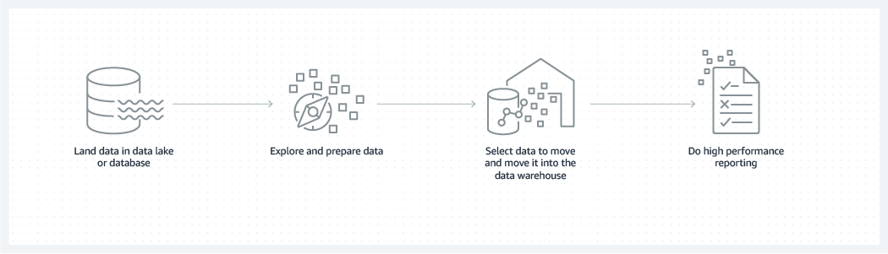
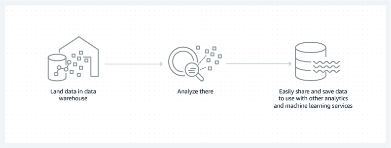
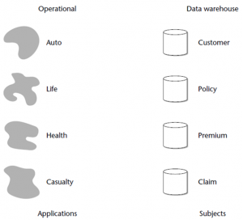
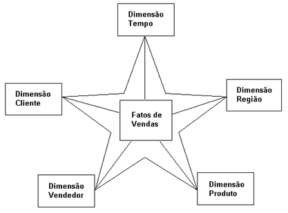
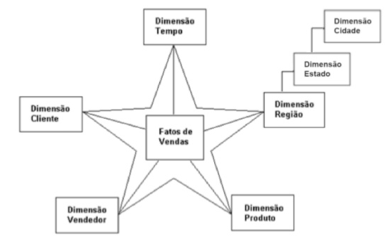
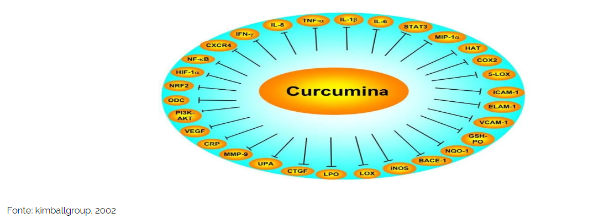
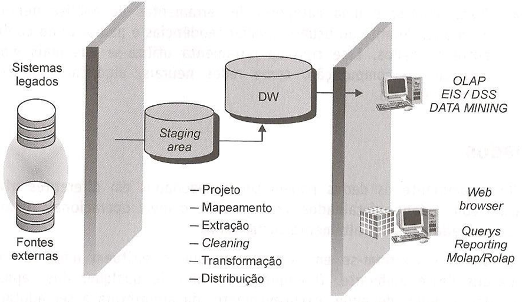
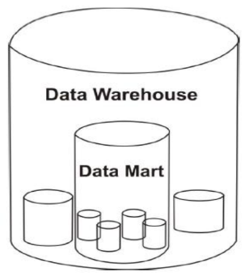
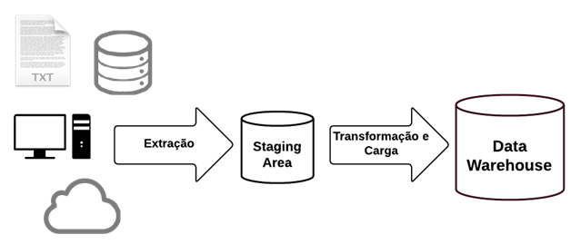

Conceitos de Data Warehouse
Itens do Edital:
c) Análise de dados e informações: Conceitos de Data Warehouse
Data Warehouse - AWS
O que é um data warehouse?
Um data warehouse é um repositório central de informações que podem ser analisadas para tomar decisões mais adequadas. Os dados fluem de sistemas transacionais, bancos de dados relacionais e de outras fontes para o data warehouse, normalmente com uma cadência regular. Analistas de negócios, engenheiros de dados, cientistas de dados e tomadores de decisões acessam os dados por meio de ferramentas de inteligência de negócios (BI), clientes SQL e outros aplicativos de análise.
Dados e análises se tornaram indispensáveis para que as empresas se mantenham competitivas. Os usuários corporativos contam com relatórios, painéis e análises para extrair insights dos dados, monitorar a performance dos negócios e apoiar a tomada de decisões. Os data warehouses alimentam esses relatórios, painéis e ferramentas de análise armazenando dados de maneira eficiente para minimizar a entrada e saída (E/S) dos dados e fornecer resultados de consulta rapidamente para centenas e milhares de usuários simultaneamente.
Como um data warehouse é arquitetado?
Uma arquitetura de data warehouses é composta de camadas. A camada superior é o cliente de front-end, que apresenta os resultados por meio de ferramentas de relatórios, análises e mineração de dados. A camada intermediária consiste no mecanismo de análises, usado para acessar e analisar os dados. A camada inferior da arquitetura é o servidor de banco de dados, onde os dados são carregados e armazenados. Os dados são armazenados de dois modos diferentes: 1) os dados acessados com frequência são armazenados em armazenamento muito rápido (como unidades SSD) e 2) os dados acessados com pouca frequência são armazenados em um armazenamento de objetos barato, como o Amazon S3. O data warehouse garantirá automaticamente que os dados acessados com frequência sejam movidos para o armazenamento “rápido”, para otimizar a velocidade da consulta.
Como funciona um data warehouse?
Um data warehouse pode conter vários bancos de dados. Dentro de cada banco de dados, os dados são organizados em tabelas e colunas. Dentro de cada coluna, você pode definir uma descrição dos dados, como número inteiro, campo de dados ou sequência. As tabelas podem ser organizadas dentro de esquemas, que você pode considerar como pastas. Quando os dados são consumidos, eles são armazenados em várias tabelas descritas pelo esquema. As ferramentas de consulta usam o esquema para determinar as tabelas de dados que serão acessadas e analisadas.
Quais são os benefícios de usar um data warehouse?
Os benefícios de um data warehouse incluem o seguinte:
Tomada de decisão adequada
Dados consolidados de várias fontes
Análise de dados históricos
Qualidade, consistência e precisão de dados
Separação do processamento analítico dos bancos de dados transacionais, o que melhora o desempenho dos dois sistemas
Como os data warehouses, os bancos de dados e data lakes funcionam juntos?
Normalmente, as empresas usam uma combinação de banco de dados, data lake e data warehouse para armazenar e analisar dados. A arquitetura de lake house do Amazon Redshift facilita essa integração.
À medida que o volume e a variedade de dados aumentam, é vantajoso seguir um ou mais padrões comuns para trabalhar com dados em seu banco de dados, data lake e data warehouse:

Imagem (acima): armazenar os dados em um banco de dados ou datalake, preparar os dados, mover os dados selecionados para um data warehouse e executar relatórios.

Image (acima): armazenar os dados em uma data warehouse, analisar os dados e compartilhá-los para usar com outros serviços de análise e machine learning.
Um data warehouse é projetado especificamente para análises de dados, que envolvem a leitura de grandes quantidades de dados para compreender relações e tendências entre os dados. Um banco de dados é usado para capturar e armazenar dados, como o registro de detalhes de uma transação.
Ao contrário de um data warehouse, um data lake é um repositório centralizado para todos os dados, incluindo estruturados, semiestruturados e não estruturados. Um data warehouse exige que os dados sejam organizados em um formato tabular, onde o esquema torna-se necessário. O formato tabular é necessário para que o SQL possa ser usado para consultar os dados, mas nem todos os aplicativos exigem que os dados estejam em formato de tabela. Alguns aplicativos, como análise de big data, pesquisa de texto completo e machine learning, podem acessar dados mesmo que sejam “semiestruturados” ou completamente não estruturados.
Comparação entre data warehouses e data lakes
| Características | Data warehouse | Data lake |
|---|---|---|
| Dados | Dados relacionais de sistemas transacionais, bancos de dados operacionais e aplicativos de linha de negócios | Todos os dados, incluindo estruturados, semiestruturados e não estruturados |
| Esquema | Geralmente projetado antes da implementação do data warehouse, mas também pode ser gravado no momento da análise (esquema na gravação ou esquema na leitura) |
Gravado no momento da análise (esquema na leitura) |
| Preço/performance | Resultados de consulta mais rápidos, usando armazenamento local | Resultados da consulta cada vez mais rápidos usando armazenamento de baixo custo e desacoplamento de computação e armazenamento |
| Qualidade dos dados | Dados altamente organizados, que representam a versão central da verdade | Quaisquer dados, organizados ou não (ou seja, dados brutos) |
| Usuários | Analistas de negócios, cientistas de dados e desenvolvedores de dados | Analistas de negócios (usando dados organizados), cientistas de dados, desenvolvedores de dados, engenheiros de dados e arquitetos de dados |
| Análises | Geração de relatórios em lote, BI e visualizações | Machine learning, análise exploratória, descoberta de dados, streaming, análise operacional, big data e criação de perfil |
Comparação entre data warehouses e bancos de dados
| Características | Data warehouse | Banco de dados transacional |
|---|---|---|
| Cargas de trabalho adequadas | Análises, relatórios e big data | Processamento de transações |
| Fonte de dados | Dados coletados e normalizados de diversas fontes | Dados capturados no estado em que se encontram, de uma única fonte, como um sistema transacional |
| Captura de dados | Operações de gravação em massa, executadas normalmente em uma programação de lotes pré-determinada | Otimizado para operações contínuas de gravação à medida que novos dados são disponibilizados para maximizar o throughput das transações |
| Normalização de dados | Esquemas desnormalizados, como Star ou Snowflake | Esquemas estáticos altamente normalizados |
| Armazenamento de dados | Otimizado para simplicidade de acesso e alto desempenho de consultas usando armazenamento colunar | Otimizado para operações de gravação de alto throughput em um único bloco físico orientado a linhas |
| Acesso aos dados | Otimizado para minimizar a E/S e maximizar o throughput de dados | Grandes volumes de pequenas operações de leitura |
Como um data mart se compara a um data warehouse?
Um data mart é um data warehouse que atende às necessidades de uma equipe ou unidade de negócios específica, como finanças, marketing ou vendas. O data mart é menor, mais focado e pode conter resumos de dados para atender melhor à comunidade de usuários. Um data mart também pode ser uma parte de um data warehouse.
Comparação entre data warehouses e data marts
| Características | Data warehouse | Data mart |
|---|
| Características | Data warehouse | Data mart |
|---|---|---|
| Escopo | Várias áreas centralizadas e integradas | Uma área específica e descentralizada |
| Usuários | De toda a organização | Uma única comunidade ou departamento |
| Fonte de dados | Muitas fontes | Uma ou poucas fontes, ou uma parte dos dados já coletados em um data warehouse |
| Tamanho | Grande, pode variar de centenas de gigabytes a petabytes | Pequeno, normalmente até algumas dezenas de gigabytes |
| Projeto | De cima para baixo | De baixo para cima |
| Detalhes dos dados | Dados completos e detalhados | Pode manter dados resumidos |
Data Warehouse - Brasil Escola
5.1. DATA WAREHOUSE
O conceito de Data Warehouse surgiu da necessidade das organizações em integrar os dados de diferentes servidores e máquinas em apenas um local e que essas informações servissem para que fossem gerados relatórios para as análises da empresa. O DW usa um modelo relacional dimensional, isto é, as informações estão dispostas de formas intuitivas, facilitando o acesso e a geração de resultados.
Outro fator determinante para o desenvolvimento de um armazém de dados é o fato de que os modelos tradicionais, gerados pelos sistemas ERP, estão estruturados de forma transacional, o que dificulta gerar informações para as análises de resultados. De acordo com Singh, 2001: “O DW é a área de armazenamento de dados históricos e integrados destinados a sistemas de suporte à decisão”.
Assim, Barbieri, 2001, conclui que:
Pode ser definido como um banco de dados, destinado a sistemas de apoio à tomada de decisão e cujos dados foram armazenados em estruturas lógicas dimensionais, possibilitando o seu processamento analítico por ferramentas especiais”.
As decisões para a utilização de um DW, parte do princípio que as informações precisam ser confiáveis para que as decisões não sejam tomadas de forma errônea. Como afirma Kimball, 2002: “Queremos que as pessoas usem informações para apoiar decisões mais baseadas em fatos”. As consultas e relatórios são acessados diretamente no DW, evitando dados sem confiabilidade dos provedores de informações originais.
5.1.1. Características
5.1.2. Orientado por Assunto
Os bancos de dados transacionais, comumente possuem todos os dados das organizações dispostas em tabelas, isso faz com que os dados nem sempre serão de fácil análise. Os DW, por sua vez são orientados aos assuntos mais pertinentes para as empresas, como a análise de mercado de determinado produto ou veículo. Na figura 1, nota-se a diferença entre sistemas operacionais comum e após a criação do DW.
Figura 1: Orientada por assunto

Fonte: INMON, 2005.
Barbieri, 2001, nos alerta que a falta e objetivo, são primordiais para o fracasso de qualquer projeto, mas isso ainda é mais agravante no que diz respeito ao DW. É preciso também pensar no futuro, se necessário uma expansão no mesmo isso deve acontecer de forma relativamente fácil, pois se o projeto for mal estrutura, pode ser que o projeto futuramente tenha que partir do zero.
5.1.3. Integrado
É comum as organizações possuírem mais de uma representante, ou filial, sendo para desenvolver as mesmas ações ou de diferente tipo, fazendo com que em certos momentos as informações serão escritas de formas diferentes a qual está na matriz, ou representante principal. Ou então o sistema ERP é diferente, isso gera inconsistência nos dados, já que as informações são provenientes de mais de uma fonte.
Uma das características mais importantes do DW é a capacidade de ler essas informações e armazená-las de forma confiável. Independe de onde vem as informações, ou da data em que foi criado, a integração no DW sempre será consistente, por exemplo. Na inserção do CPF de clientes de um grupo de empresas, na organização X o CPF é inserido da seguinte forma: 999.999.999-99 já na empresa Y insere assim: 99999999999, a princípio pode ser uma questão simples, mas no momento em que for cruzar as informações, não será possível “linkar” um CPF com o outro. O DW irá transformar essas informações num modelo único.
5.1.4. Histórico
O que influência o tamanho do DW é principalmente as informações históricas das organizações, a forma mais eficaz de análise de tendência é tendo informações de anos anteriores para a comparação. Os dados históricos dos DW podem ter facilmente mais de 5 anos. Nos sistemas tradicionais, as informações remetem a posição atual dos dados no momento da pesquisa, ou num curto período de tempo, não sendo possível uma análise mais a fundo. É comum nos sistemas tradicionais a remoção de dados antigos para a liberação de espaço no banco de dados, isso não ocorre no DW pois as informações sempre serão importantes para as análises e projeção do futuro.
5.1.5. Não Volátil
Há apenas duas operações executadas no DW, a primeira delas é a transação de carga dos dados provenientes dos sistemas provedores de informações e a segunda é o processo de leitura dos dados para a geração de relatórios. Não é possível a escrita de dados nas dimensões do DW diretamente como acontece nos bancos de dados tradicionais, sendo apenas para a leitura, fazendo com que as informações permaneçam estáveis mesmo após longos períodos de tempo.
5.1.6. Modelos
Todas as características do DW, bem como suas diferenças aos sistemas tradicionais passam inteiramente pelos modelos a serem usados para a construção do novo repositório de dados. Os modelos, a grosso modo é a forma como os dados serão organizados e estruturados, como as entidades serão conectadas e como irão interagir entre si.
As opções de estrutura no DW variam das necessidades de cada caso, as mais comuns atualmente são o Modelo Estrela (Star Schema) e o Modelo Floco de Neve (Snow Flake), cada um com sua característica e limitação referente ao outro.
5.1.7. Modelo Estrela
O modelo estrela foi proposto por Ralph Kimball, para ser um modelo altamente redundante, onde todas as descrições seriam repetidas em cada dimensão. Sua estrutura é composta por uma tabela central de Fatos e um conjunto de tabelas ligadas a ela, que são chamadas de dimensões. As dimensões são compostas por eventos ou características do mesmo, enquanto a tabela fato, como o próprio nome diz, armazena os fatos ocorridos, por exemplo, o Fato é a venda de um veículo, as dimensões são as informações dessa venda, como a data que ocorreu, veículo vendido, valor da venda e assim por diante. Na figura 2 pode se verificar a estrutura do modelo estrela.
Figura 2: Modelo Estrela.

Fonte: MACHADO, 2004.
Segundo Singh (2001) uma característica importante desse modelo é fato de suas dimensões serem desnormalizadas, isto gera várias duplicidades no banco, mas também garante confiabilidade nas consultas. Barbieri, 2001, cita como desvantagem do modelo estrela o fato de ele não ter uma perfeita coesão entre os Data Marts e um esforço redobrado na extração de dados, já que várias informações são duplicadas.
5.1.8. Modelo Floco de Neve
O modelo floco de neve também possui uma tabela Fatos ligada as entidades de dimensões, porém, ao contrário do que ocorre com o modelo estrela, há entidades relacionando entre si, isto diminui drasticamente o tamanho do DW, porém as consultas podem se tornar um pouco complicadas. Na figura 3 observa-se a estrutura do modelo Floco de neve.
Figura 3: Modelo Floco de neve

Fonte: MACHADO, 2004.
Segundo Machado (2004), O modelo floco de neve é o resultado da decomposição de uma ou mais dimensões que possuem hierarquias entre seus membros. O que difere também do modelo estrela é o fato das dimensões serem normalizadas, não ocorrendo as duplicidades que ocorre no modelo estrela, SINGH (2001) completa dizendo que normalizando os dados das tabelas dimensionais de um modelo estrela transforma o mesmo em um modelo floco de neve.
5.1.9. Estrutura Do Data Warehouse
Segundo o Kimball group, grupo especializado na concepção de Data Warehouse para Business Intelligence, a estrutura base para um Data warehouse seria, composta por três componentes, Data Sources, Data Staging Area e Data Presentation Area. Na figura 4 observa-se a organização básica de um DW.
Figura 4: DW

Fonte: kimballgroup, 2002
5.1.10. Data Source
São De Onde As Informações Serão Extraídas, A Fonte Dos Dados, Independentemente do servidor que está em uso, por exemplo, uma organização possui duas fontes de dados, uma baseada em SGBD Oracle e a outra em SQL server, o DW tem por função integrar esses dados em apenas um local de forma que possam ser cruzadas informações.
5.1.11. Data Staging
É onde estão armazenados os dados, é um meio termo entre o sistema operacional e a camada de apresentação, fazendo uso de conjuntos de processos chamados de ETL (Extração, Transformação e carregamento), ver seção 4.1.6 É onde ocorre a “higienização” dos dados, onde são definidas as estruturas, os fatos e as dimensões do DW. O Data Staging, não é de acesso livre aos usuários, pois não gera relatórios e nem consultas, ficando a cargo do Data Presentation Area.
KIMBALL (2002), indica o requisito do Data Staging:
O requisito de arquitetura chave para a Data Staging é que ela esteja fora do alcance dos usuários de negócios, não fornecendo serviços de consulta e apresentação.”
Figura 5: Staging area

Fonte: MACHADO, 2004.
5.1.12. Data Presentation Area
É onde os dados estão organizados e prontos para serem acessados pelos usuários. Com base num modelo dimensional, os dados são acessados de forma intuitiva e as informações são consistentes. As ferramentas que possuem essa finalidade são conectadas ao cubo OLAP (ver seção 4.2) e com auxílio das operações apresentam os relatórios para o usuário final.
5.1.13. Data Mart
Tendo como base o exemplo citado referente a venda de um determinado veículo, é possível extrair as informações dessa venda, porém se necessário obter várias vendas, com vários filtros essas informações tendem a se tornarem complexas para se analisar e consequentemente para tomar decisões, em razão disso, a ideia de um diretório exclusivo a determinado assunto dentro do próprio DW, ou extraindo informações diretamente das fontes de dados, acabou se tornando bastante necessário.
Segundo Silva (2003), há um consenso sobre Data marts:
“Há um consenso entre os fornecedores de soluções de Data Warehouse. A idéia é começar pequeno, mas pensando grande. E é o que está acontecendo. Na maioria dos casos, as empresas que optam pelo Data Warehouse iniciam o processo a partir de uma área específica da empresa para depois ir crescendo aos poucos.”
Barbieri (2001), nos elucida que, Data Mart é um depósito de dados que atende as áreas especificas da empresa, ou seja, separa por assuntos os dados coletados, Primak (2008) complementa dizendo que pode-se dividir um DW em vários Data Marts, com seus determinados assuntos e diminuindo o tempo de resposta e facilitando o acesso a essas informações, no cenário da venda de veículos, temos a tabela principal, que no caso é a “fatovendas” que tem todas as informações de vendas de determinado veículo, mas é possível também a criação de Data Marts específicos, como “fatorh”, que terá as informações do recursos humanos da organização, “fatofluxo”, responsável por catalogar o fluxo de clientes e assim por diante, mas ainda assim, possibilitando cruzar essas informações utilizando operações (ver seção 4.2.1), por exemplo, é possível emitir um dashboard das vendas pelo fluxo de clientes, podendo ter ideia de quantos clientes são necessários para finalizar uma venda, ou então traçar uma linha do tempo das vendas, pelo valor investido em marketing naquele período. Na figura 6, nota-se como se estrutura o Data Mart em um DW.
Figura 6: Organização do Data Mart

Fonte: NERY, 2007.
5.1.14. Data Mining
A diferença básica do BI para o Data mining se refere a quem é direcionado a atuação. O BI tem como base fornecer as informações para o nível estratégico da organização, onde se tomam as decisões a níveis gerenciais, já o Data mining fornece as informações em níveis menores, são usadas principalmente na área de atuação, ou no plano tático da empresa.
O DM é constituído por um conjunto de 3 conceitos básicos para o seu sucesso, são eles:
Estatística
Inteligencia artificial
Machine learning
O Machine Learning nada mais é que a combinação dos dois primeiros conceitos, é a grosso modo o fato do DM “aprender com os dados”, com cálculos estatísticos e com uma boa inteligência artificial é possível que o software trace caminhos sozinhos para a obtenção de resultados.
5.1.15. ETL – Extract, Transform And Load
É o processo de extração dos dados de fontes externas para o Data Warehouse, transformando suas tabelas e informações em dimensões e fatos no DW e carregando todas as informações de forma “limpa” e consistente no banco em questão.
Figura 7: ETL

FONTE: CANALTECH, 2014.
Segundo KIMBALL (1998), ETL é o Conjunto de processos pelos quais os dados de origem operacional são preparados para o Data Warehouse. KIMBALL (1998) completa, é o processo mais crítico e demorado na construção de um DW, podendo levar até 60% do total de horas da implementação do projeto. Pois os modelos relacionais, nem sempre dispõe de uma arquitetura que facilite isso, possuindo também o fator de quantidade de dados que o sistema possui.
Barbieri, 2001, diz que o conceito do processo ETL, pode ser dividido em:
- Filtro de dados
Os bancos de dados comuns não são normalizados, isto faz com que os dados possam ter informações indesejáveis, o papel do ETL nessa etapa é filtrar e não carregar no DW essas informações.
- Integração de dados
Fazer com que todas as informações a determinado assunto sejam correlacionadas, independente se ela está num sistema no banco de dados, ou em planilhas locais.
- Condensação de dados
É condensar as informações de forma sumariada, ou seja, as vendas de determinado dia, precisam sempre estar presentes juntamente com as outras vendas do mesmo dia.
- Conversão de dados
Cada banco de dados apresentam as informações de formas distintas, podendo ser uma virgula ao invés de um ponto, ou até o símbolo de moeda ser diferente, o ETL converte esse modelo em um outro modelo padrão do DW.
- Derivação de dados
Continuação da conversão de dados, mas atuando apenas nas informações, não em como o modelo é empregado.
Uma boa ferramenta de ETL deve ser capaz de se adaptar as mais formas de banco de dados, suas linguagens e seus formatos. Atualmente a oferta de ferramentas de ETL é bastante elevada, empresas que possuem ferramentas de BI, ou ferramentas para a construção de um DW normalmente disponibilizam um software especifico para a função, como é o caso SQL Server Integration Services e do Pentaho Data Integration, Ferramentas ETL dos softwares da Microsoft e da Pentaho, respectivamente.